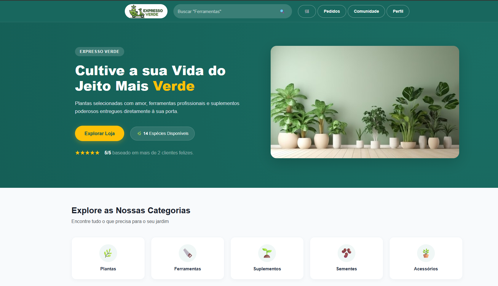
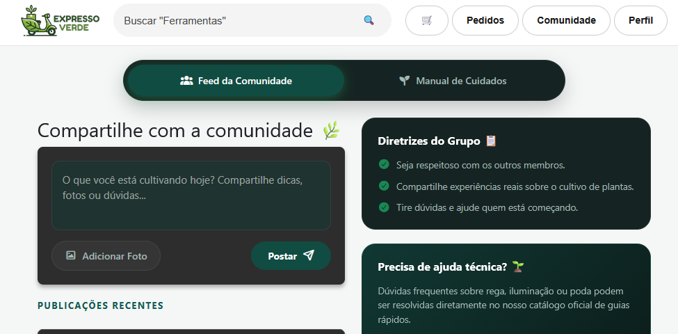
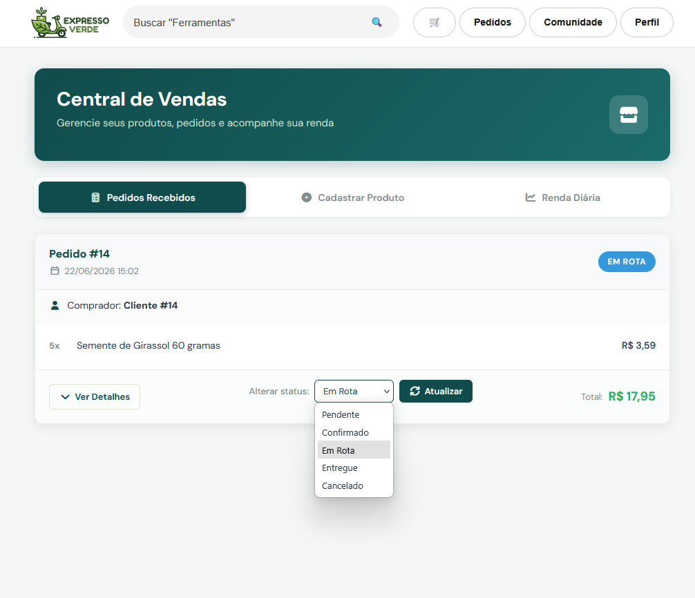

Plataforma Expresso Verde
Ambiente focado na conexão entre compradores e vendedores de artigos de jardinagem. Aplicação prática dos conceitos rigorosos de arquitetura e engenharia de software.
Visualizando o Projeto
Páginas e funções do projeto
-
01. Página Principal ->

-
02. Feed da Comunidade ->

-
03. Central de Trade ->

O Projeto
O Expresso Verde é um sistema web desenvolvido sob a orientação do Prof. Edeilson Milhomem da Silva. O foco principal reside na intermediação eficiente e segura de plantas, sementes, ferramentas e insumos de jardinagem.
Objetivos Acadêmicos
- Levantamento sistemático e validação de requisitos
- Modelagem de processos e arquitetura distribuída
- Desenvolvimento modularizado focado em manutenibilidade
- Garantia de qualidade por meio de rotinas de testes
Funcionalidades Planejadas
Autenticação e Perfis
Controle de acesso seguro para compradores e vendedores gerenciarem seus portfólios.
Módulo de Trade
Fluxo completo de exposição de catálogos, processamento de intenções de compra e venda.
Busca Indexada
Filtros estruturados para localização ágil de espécies de plantas, sementes e ferramentas específicas.
Feed da Comunidade
Espaço interativo voltado para compartilhamento de logs de cultivo, textos técnicos e imagens.
Interface Fluida
Layout responsivo otimizado para o consumo de dados estável tanto em desktop quanto mobile.
Histórico de Operações
Rastreabilidade interna de últimas aquisições e transações concluídas na plataforma.
Arquitetura & Stack
O ecossistema adota o padrão estrutural MVC (Model-View-Controller), garantindo baixo acoplamento e separação de responsabilidades nas camadas de negócio.
Instalação Local
$ git clone https://github.com/antoniotrauthmann/projeto-es.git docs-site
# Mova para o diretório htdocs / root do seu servidor local
$ cp -r docs-site /var/www/html/projeto-es
# Importe o schema do banco de dados no MySQL (/config/database/expressoverde.sql)
$ mysql -u root -p expressoverde < config/database/expressoverde.sql
# Configure suas credenciais locais em /config/db_connect.php
$ open http://localhost/projeto-es/index.php?rota=catalogo